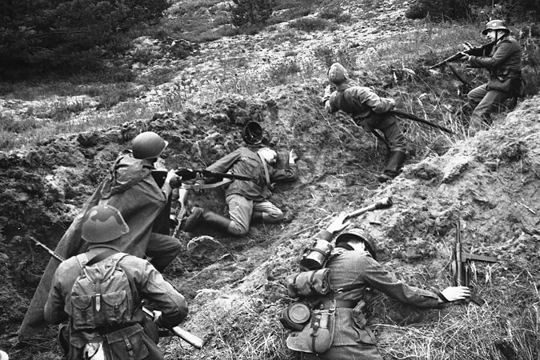

|

Командиров и политруков считали без вести пропавшими, а на самом деле они были изощренно убиты на стрельбище в окрестностях лагеря смерти Дахау
Великая Отечественная война и по сей день хранит много скорбных тайн. Очередная из них стала известна благодаря энтузиастам из Народного союза Германии по уходу за военными могилами, которые готовят к 70-летию окончания Второй мировой большую экспозицию в концлагере Дахау. Им стали известны имена 62 советских пограничников, изощренно убитых на эсэсовском стрельбище Хебертхаузен в окрестностях концлагеря Дахау.
По пленным офицерам и политрукам эсэсовские палачи пристреливали свое оружие. Советских пленных приковывали наручниками к столбам и методично стреляли, испытывая винтовки, пулеметы, пистолеты на точность, дальность, убойность.
И вот сейчас имена убитых установлены. В Германии и в России верят, что даже сейчас, спустя почти 70 лет, отзовутся родственники погибших. В скорбный список попали трое пограничников из Калининской области.
Это лейтенант Андрей Семенович Компасов, 1906 года рождения. Служил в 105-м пограничном отряде. Об офицере в электронных архивах удалось найти лишь, что он пропал без вести 23 июня 1941 года.
Второй - политрук роты 466-го стрелкового полка Евгений Иванович Чиримов, 1911 года рождения. Пропал без вести в 1941 году. У Евгения Ивановича в Вышнем Волочке, откуда он родом, жила мать Александра Петровна Черимова. В 1941 году она проживала на улице Красных Печатников в доме № 81.
Третий - политрук Михаил Васильевич Алексеев, 1915 года рождения. Михаил Васильевич был инструктором пропаганды политотдела первой бригады ПВО Белорусского особого военного округа. Политрук родом из Великолукского района Калининской области (сейчас территория относится к Псковской области), из деревни Трощанки. У Михаила Васильевича была жива сестра Валентина Васильевна Алексеева. В то время она была зарегистрирована на станции Великие Луки, по адресу: контора ШЧ-3 (Шнуровая часть. - Ред.).
Если вы что-то знаете об этих людях или их родственниках, звоните в редакцию «Комсомольской правды» по телефону (4822) 33-93-10 или пишите по адресу: 170008, Тверь, ул. Озерная, 11а либо по электронной почте gazeta@kptver.ru.
Источник: статья газеты "Комсомольская правда" Александра Громова
PS. Возможно, Компасов А.С. был уроженцем Удомельского или Лесного района Калининской области. В других районах Калининской области воинов с такой фамилией мы не нашли.
|